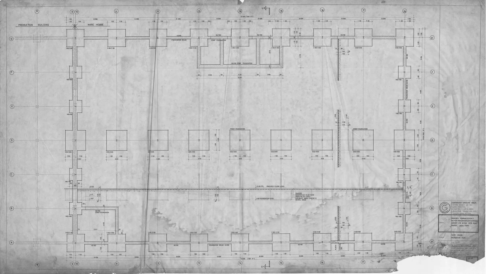

This guide provides aesthetic clinics and resellers with essential insights on sourcing Mounjaro 7.5mg wholesale, ensuring informed purchasing decisions.
As the demand for effective weight management solutions continues to rise, aesthetic clinics are increasingly seeking reliable wholesale suppliers for products like Mounjaro 7.5mg. However, navigating the wholesale market can be challenging for professional buyers who need to ensure quality, compliance, and cost-effectiveness. Understanding how to source Mounjaro 7.5mg effectively is crucial for clinics aiming to meet client expectations while managing operational costs.
This guide aims to equip clinics, spas, resellers, and distributors with practical insights into sourcing Mounjaro 7.5mg wholesale. By addressing key considerations and providing actionable steps, buyers can streamline their procurement processes and make informed decisions that support their business objectives.
Key Takeaways
- Identify reputable wholesale suppliers with a proven track record in the aesthetic market.
- Understand the importance of documentation and compliance with local regulations.
- Evaluate packaging options to ensure product integrity during shipping.
- Plan reorder quantities based on demand forecasts and client needs.
- Maintain clear communication with suppliers for efficient logistics and support.
What this guide covers
- Understanding Mounjaro 7.5mg
- Buyer scenarios and order planning
- Comparison criteria for suppliers
- Checklist before requesting a quote
- Logistics considerations
- MOQ and reorder planning
- Frequently asked questions
What buyers should understand first

Mounjaro 7.5mg is a medication designed for weight management, and it has gained popularity among aesthetic clinics for its effectiveness. As a professional buyer, it is essential to understand that this product is not just a commodity; it requires careful consideration regarding sourcing. Buyers should be aware of the product's specifications, including its formulation, packaging, and shelf life. Additionally, understanding the regulatory landscape surrounding Mounjaro 7.5mg is crucial, as compliance with local laws and guidelines is non-negotiable.
When sourcing Mounjaro 7.5mg, it is important to recognize that the product's quality can vary significantly among suppliers. Therefore, conducting thorough research and due diligence is vital. This includes verifying supplier credentials, checking for certifications, and ensuring that the product is sourced from reputable manufacturers. This foundational knowledge will empower buyers to make informed decisions that align with their clinic's standards and client expectations.
Which buyers is this most relevant for?
This guide is particularly relevant for aesthetic clinics, medical spas, resellers, and distributors who are looking to incorporate Mounjaro 7.5mg into their offerings. Professional buyers in these sectors often face unique challenges, such as managing inventory levels, forecasting demand, and ensuring compliance with local regulations. For clinics that are expanding their weight management services, understanding how to source Mounjaro 7.5mg effectively can lead to better client satisfaction and operational efficiency.
For instance, a medical spa looking to introduce Mounjaro 7.5mg as part of its weight management program must consider how to effectively stock and promote the product. Similarly, resellers need to evaluate their inventory turnover rates and ensure they can meet the demand from their clientele without overstocking. Each buyer scenario will have distinct needs and planning requirements that this guide aims to address.
How to compare options before ordering
When evaluating wholesale suppliers for Mounjaro 7.5mg, consider the following criteria:
- Product Type: Ensure that the product meets your clinic's needs and client expectations.
- Brand Reputation: Research the supplier's history and customer feedback.
- Packaging: Assess whether the packaging is suitable for your storage and handling requirements.
- Batch and Expiry Visibility: Confirm that suppliers provide clear information on batch numbers and expiration dates.
- Supplier Communication: Evaluate the responsiveness and support offered by the supplier.
- Destination Requirements: Ensure that the supplier can meet your specific shipping and delivery needs.
Additionally, consider the supplier's return policy and warranty options. A supplier that offers a robust return policy can provide peace of mind in case of any discrepancies or issues with the product upon delivery. This aspect can be particularly important for clinics that prioritize client safety and satisfaction.
Buyer checklist before requesting a quote


- Define your required quantity and any variants needed.
- Confirm compliance with local regulations regarding Mounjaro 7.5mg.
- Gather documentation requirements for your records.
- Check supplier reviews and ratings.
- Prepare questions regarding shipping, packing, and delivery timelines.
- Clarify payment terms and conditions.
- Assess the supplier's customer service availability for ongoing support.
Shipping, packing and documentation questions
Logistics play a critical role in the procurement process for Mounjaro 7.5mg. Buyers should consider the following questions:
- What are the shipping options available, and how do they impact delivery times?
- How will the product be packed to ensure it arrives in good condition?
- What documentation will be provided with the shipment, and is it sufficient for compliance?
- Are there any specific customs requirements for importing Mounjaro 7.5mg?
- What is the supplier's policy on handling damaged or lost shipments?
Understanding these logistics questions can help buyers avoid potential pitfalls and ensure a smooth procurement process. It is advisable to have a clear communication channel with the supplier regarding shipping updates and any issues that may arise during transit.
MOQ, quotation and reorder planning
Understanding minimum order quantities (MOQ) is essential for effective procurement. Buyers should prepare to communicate their desired quantities and any specific variants they need. Additionally, consider your destination details, as this can impact shipping costs and timelines. SOLA can assist in confirming current availability and providing a wholesale quotation tailored to your needs.
Proper reorder planning based on demand forecasts will help maintain inventory levels and ensure that you can meet client needs without interruption. Analyzing past sales data can provide insights into how much stock to reorder and when, helping to optimize inventory turnover and reduce excess stock.
FAQ
What is Mounjaro 7.5mg used for?
Mounjaro 7.5mg is primarily used for weight management in aesthetic clinics.
How can I find a reliable wholesale supplier?
Research suppliers, check reviews, and assess their communication and support capabilities.
What should I consider regarding shipping?
Evaluate shipping options, packing integrity, and documentation for compliance.
What is the typical MOQ for Mounjaro 7.5mg?
MOQs can vary by supplier, so it’s important to confirm this during your sourcing process.
How can SOLA assist me?
Contact SOLA for wholesale quotation via WhatsApp to get tailored support for your sourcing needs.
Planning a wholesale request?
Send product names, quantities and destination for a tailored discussion.
Contact SOLA on WhatsApp →General educational content for professional buyers. Not medical, legal, regulatory or import advice.
Image sources: Ijede Rd Ikorodu Pharmaceuticals Factory For Crsterlight Overseas Agency Ltd Nigeria 1985 Designed by Michael Olutusen Onafowokan Warehouse Foundation Plan 018.jpg by Onafowokan Michael Olutusen (CC BY-SA 4.0, 3937x2222 px).